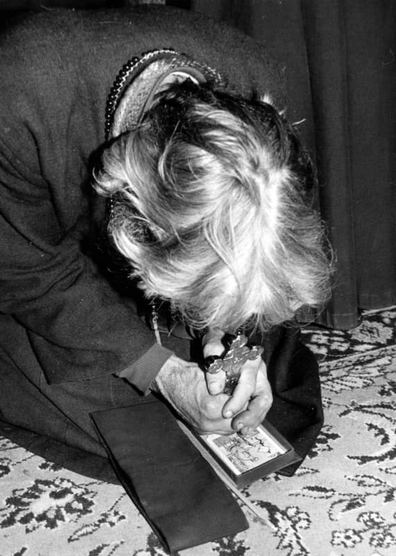

„În vremile acestea mai de pe urmă, care sînt vrednice de multe lacrimi, pot să zic că în toată lumea n-au rămas alte locuri unde să poată ține cineva viață [călugărească] de obște cu pace și cu liniște, decît numai într-aceste bine-credincioase Țări Românești pe care Dumnezeu le păzește cu pronia Sa cea dumnezeiască, ca să se proslăvească numele Său cel sfînt.” Așa îi scria Cuviosul Paisie de la Neamț, în urmă cu două veacuri și jumătate, mitropolitului de atunci al Moldovei. Și Starețul (Malorusian de neam) știa ce spune, fiindcă petrecuse de ajuns și în Lavra Kievului, și în mănăstirile Sfîntului Munte Athos. Și, găsind loc atît de prielnic sfintei viețuiri călugărești, Cuviosul a săvîrșit două minunate lucrări. Una, aceea că a întemeiat din nou viața de obște pe vechile și sfintele așezăminte ale Sfintei Scripturi și ale Părinților Bisericii. Iar a doua, încă mai mare, aceea că el și ucenicii săi au tălmăcit pe limba noastră sfintele cărți ale Ortodoxiei, faptă decît care nici una nu este mai însemnată și mai bine-plăcută lui Dumnezeu. Căci - necunoscînd cuvîntul Adevărului, păstrat în Sfintele Scripturi ale Vechiului și Noului Testament și în scrierile Sfinților Părinți ai Bisericii, și ele insuflate de Sfîntul Duh-Dumnezeu - cum am putea să nădăjduim la mîntuire? Încît pe bună dreptate scria unul din ucenicii Cuviosului că: „Prin aceste tălmăciri, s-a făcut un folos cu adevărat atît de mare – și nu numai soborului părinților, ci și tot neamului nostru - cît nu s-a mai făcut așa în neamul acesta, precum poate socoti oricine.”
Însă nimic nu urăște mai mult diavolul cel mare și tatăl minciunii decît întemeierea vieții monahale (care e, după cum zic Părinții, urmare a aceleia îngerești) și, îndeobște, petrecerea creștinească așezată după sfintele rînduieli puse de însuși Hristos-Dumnezeu și de Dumnezeu-Sfîntul Duh prin sfintele scripturi ale Evangheliei și ale Sfinților Părinți ai Bisericii. Așa încît, viețuirea îmbunătățită din obștile întemeiate de acest fericit Stareț Paisie, precum și cunoștința adevărului păstrată în cărțile din biblioteca mănăstirii Neamțu au ars inima stăpînului minciunii și ochii slujitorilor săi diavoli nu numai în vremea vieții Starețului, ci și după trecerea acestuia la Domnul. Și acești răi vrăjmași ai lui Dumnezeu și ai omului se socoteau și chibzuiau cum să strice binecuvîntata lucrare săvîrșită în aceste obști paisiene, precum citim numaidecît mai jos, în această vedenie proorocească.
«S-au întâmplat mai sus numitului părinte, după eșirea de la cântarea Utreniei, într-una din zile, [că] s-au culcat să se odihnească, și întru vedenia visului i s-au părut că au eșit afară pe poarta mănăstirii și au stătut înaintea porții în depărtare ca la 30 de pași. Și era monahul îmbrăcat cu rasa și cu camilafca pe cap, și cu cârjulița în mână, și din cei bătrâni fiind cu procopsala, multe limbi știa. Au râdicat ochii în sus, și au văzut un trup înainte-i întunecat și foarte înfricoșat la vedere, îmbrăcat cu haine nemțești, precum sunt căpitanii de oaste, pălăria lui împletită de șerpi vii, capetele lor să închipuia în pietre scumpe, obrazul lui negru cu totul, barba mică, ca a lui Cazlarii Atazi (adecă Atazi să vede că au fost un om însămnat de viteaz în aceeași vreme) nasul mare și nările foarte largi, cu ochii scăpăra foc ca fulgerul, vederile sângerate ca [pe] niște luceferi întorcându-i, cu dinții de oțel, și din nasul lui eșia fum puturos ca de pucioasă, dupre cum scrie la Iov; urechile îi era[u] lungi și ascuțite ca de măgariu. Ceafa lui fier bătut, umerii lui de oțel ca nicovala, și în cap avea patru coarne de capră, doaă înainte, strâmbe, și doaă înapoi, iară mâinile lui bălauri, și fieștecare deget a[l] mâinii lui cap de șarpe. Camzocul lui piele de aspidă, brâul șarpe de cei de Indiia, carii ca săgeata trece prin om, avea și coada ca de vasilisc, ascuțită în vârf cu bold, și încârligată în sus ca a caprei, iară picioarele oable, cu ciubote de aspidă verzi, cu potcoave de fier, în chipul unghiilor leului; baston avea un șarpe viu, și de cap țiindu-l, să răzăma într-însul; sabiia lui paloș lung de văpae cu doaă ascuțișuri legată la brâu; scaunul lui tigru, mulțime de ofițeri împrejurul lui și mulțime de ostași, toți aseminea lui cu chip urâți și scârnavi, carii cu mare frică st[ăte]a[u] înaintea lui. Și apropiindu-se monahul, i-au zis lui:
– Ce iaști tu?
– Cneaz sunt, călugăre, au zis cătră dânsul.
Zis-au monahul:
– Moschicesc sau nemțăsc?
– Nu sunt om.
Zis-au monahul:
– Dar ce iaști tu?
I-au răspuns cneazul:
– Pre care voi îl numiți satana eu sunt al doilea după dânsul, orânduit preste toate oștile lui, arhistrateg.
I-au zis monahul:
– Ce cauți aicea?
– Am comandă, îi răspunde, aici la voi!
I-au zis monahul:
– Aicea nu iaste războiu, nici ostași.
Răspuns-au cneazul:
– Dar cum zici că nu sunt? Dar călugării ce sunt? Ei ne dau războiu no[u]ă și noi lor.
Au zis monahul:
– Dar câtă sumă de oaste ai tu aicea cu tine?
I-au răspuns:
– Șasă zăci de mii.
Zis-au monahul:
– Pentru ce atâția, fiindcă aicea nu sunt nici trei sute de călugări?
Zis-au cneazul:
– Nu te mira, călugăre, că unde sunt ostașii tari, acolo și oaste mai multă trimite împăratul. Privește la împărații lumii, precum au fost și Dariie, împăratul perșilor, când au făcut războiu cu Alexandru Machidon: i-au trimis lui Alexandru un sac de mac, zicându-i: „De vei putea număra mulțimea seminții macului, vei număra și oștile meale”. Alexandru i-a răspuns că macul iaste dulce și bun la mâncare. Apoi i-au trimis și Alexandru lui Dariie o traistă de chiper negru, zicând: „Așa sunt oștile meale”.
S-au mirat monahul auzind acestea.
I-au zis cneazul:
– Ce te miri? Că aceste mii de-a pururea șăd aicea, iară în vreme de nevoe și înmiit mai multe oști aducem la războiu. Însă mai în scurt, să-ț[i] spun adevărul, călugăre: încă de la Sfeta Gora de când șidea Starețul Paisie în Monastirea Pandocratorului, la chiliia Sfântului Constantin, de atunci sunt rânduit ca să-i dau războiu în toată viața lui. Și fiindcă șidea acolo cu liniște, am rânduit eu pe oarecarii, cu chip de râvnă ca să vină la călugărie, care avea și sirmeadin destul, și l-am îndemnat să-ș[i] facă monastire la Prorocul Ilie, și cu multe griji l-am încurcat. Și văzând că și acolo șăzând ne ardea luminile ochilor, am îndemnat pe lăcuitori să le deie o mânăstire împărătească. Și acolo puțin nu căzusă în unghiile mele, dară Hristos al lor ajutându-le, am rămas biruit. Însă după aceaia, găsind vreme cu prilej, i-am râdicat cu totul și i-am adus în Moldova, la Monastirea Dragomirna, și acolo numai unul dintru ai noștri am găsit.
Deci am râdicat oștile chesaricești, și au cuprins cu stăpânirea locul acela, iară pe Starețul l-am gonit și l-am dus la Secu, și acolo am găsit iară pe unul de ai noștri. Deci am îndemnat pre stăpânitori ca să le dea Monastirea Neamțului. Acolo am găsit doi de-ai noștri. Și acolea unde iaste medeanul de războiu, și al lor, și al nostru, pe mulți am câștigat.
Deci i-au zis monahul:
– Apoi nu să mântuiasc din mâinile voastre nici unul dintru acei ai Starețului?
I-au răspuns:
– Cât au fost Starețul viu, mulți au scăpat, dar mulți am și câștigat.
I-au zis monahul:
– Acum ai mulți cu tine?
Iară el au zis:
– Aicea în Neamțu numai cincizeci de mii am, fiindcă în Secu am lăsat zece mii.
I-au zis monahul:
– Apoi îngeri nu sunt aicea?
I-au răspuns cneazul că fieștecare călugăr are câte un înger, iar cei ce-L ascultă pe Hristos încă și mai mulți au cu sine împreună.
I-au zis monahul:
– Dar îngerii nu pot nimic împrotiva voastră?
Răspuns-au cneazul:
– Să-ți spui ție, călugăre, că atâta putere are un înger, încât pe tatăl nostru satana, îl gonește cu toate oștile lui, cât nu poate nici înapoi să caute.
Dar zice:
– Când?
– Când ascultă călugărul pre Hristos și face poruncile lui Dumnezeu.
Atuncea, așa vorbind iai între sine, monahul cu cneazul, iată că răspunsără un cuvânt poroncitoriu: „Haide degrab!”, și cuvântul l-au zis turcesc: „Tezghet!”. Și numaidecât s-au văzut că au eșit o săniuță de cele de poștă, cu cai cu tot, și în loc de cai, era treizăci de draci în chip de câini înhămați, carii era[u] negri și din ochi slobozia[u] scântei de foc. Și în săniuță șidea unul cu haine călugărești, ca un arhimandrit, cu barba mică neagră, și treizăci mergea[u] înainte calauzi, și alți treizăci împrejurul lui. Și în capră șidea unul vezetiu, și în loc de biciu ținea un șarpe de cap și mâna pe ceelanți. Și când au lovit cu biciușca întâi, numai cât s-au mișcat săniuța, iară când au lovit a doă oară, au țiuit urechile tuturor și îndată au purces la vale, pe la stăreție și pe la casa îndrăciților. Și acolo, drept pe malul magherniții, au întâlnit pe alt căpitan de poștă, cu cinsprezăci înainte și cu alți cincisprezece înapoi, aseminea lor urâți și scârnavi. Și au dat „bună calea” unul altuia și au întrebat cel ce viniia:
– Unde te duci bimbașa Savracachie?
– Mă duc, zice, stăpâne, că m-au trimis cneazul zarafilor pănă la Târgul Neamțului și pănă la Târgul Pietrii pentru o trebuință.
– Dar tu, căpitane Lustuțioane, de unde vii?
– Stăpânul m-a trimis aicea la Monastirea Neamțului.
– Pentru ce, zice, te-au trimis?
Răspunse:
– Un călugăr s-au așternut cu fața la pământ și cu lacrămi roagă pre Dumnezeu, ca să ne prăpădească pre noi, și au ars inima stăpânului.
Iară acela i-au zis:
– Dar aicea iaste cneazul Zarafil. Să mergi la dânsul și să-i arăți.
– Cum, zice, să nu merg?!
Și iată că numaidecât sosi înaintea cneazului căpitanul acela, iar cneazul întețind cu cuvântul, i-au zis ce [anume].
– Ce ai venit tu, bre?
Răspunde căpitanul:
– Stăpânul m-au trimis.
– La ce te-au trimis?
Răspunde căpitanul:
– Un călugăr s-au așternut cu fața la pământ și cu lacrămi roagă pre Dumnezeu ca să ne piarză pre noi, și au ars inima stăpânului.
Iară cneazul îndată i-au zis:
– Dar aicea treaba mea iaste.
Iară el au zis:
– Nu știu, stăpânul m-au trimis.
Îi zice cneazul:
– Haide, du-te.
Și s-au dus și au început a-i scutura chilia călugărului aceluia. Și îndată fulger din cer s-au trimis asupra diavolului aceluia și au început a-l trânti și a-l străpunge cu foc, tăvălindu-l la pământ, și el striga: „Vai! Vai! Că m-au ars!” Și așa tăvălindu-să, a fugit la cel mai mare. Iar cel mai mare i-au zis:
– Vai de capul tău, mișălule, cu ce obraz ti vei duce la stăpânul acum? Iară călugărul au râs de mișălătutea lui, și îndată i-au zis cneazul:
– Pentru ce râzi, călugăre, și zici că mulți ostași sînt ai miei? Că măcar de ți să pare că sînt mulți, dar nu toți sînt iscusiți la războiu și la trebi.
L-au întrebat călugărul:
– Pentru ce mai șăzi aicea?
Răspuns-au cneazul:
– Să-ți spun, călugăre, pe rând.
După ce a murit Starețul Paisie, cel înfricoșat no[u]ă și ajutătoriu voă și mare la Dumnezeu, îndată au trimis stăpânul și a luat doaăzeci de mii și au rămas treizeci de mii aicea, și făcându-să Sofronie stareț în locul lui Paisie, și milostiv fiind, au priimit fel de fel de feță, și au priimit copii mici, împreună să petrecă cu călugării (că pe copii, precum în cărțile voastre să scrie, nu-i aduce Dumnezeu la monastire, ci satana, și iarăși în cărțile voastre iaste scris că unde sînt copii și vin, nu-i trebuință de satana) și încă au mai râdicat zece mii și am rămas doaăzeci de mii.

Deci i-au zis monahul:
– Dar aceia unde sunt rânduiți?
I-au răspuns cneazul:
– Înlăuntru în monastire opt [sprezece] mii, iar pe la chiliile cele de afară două mii.
Iau zis iarăși monahul:
– Dar la schit la Vovidenie și la Procov?
I-au zis:
– Doă sute la Vovidenie sunt și trei sute la Procov.
Zis-au monahul:
– Pentru ce la Procov mai mulți, iară la Vovidenie mai puțini?
Zice cneazul:
– La Procov totdeauna se roagă lui Dumnezeu și este loc dosit, fără sminteală. Iară la Vovidenie vin mireni, femei și copii.
I-au zis monahul:
– Dar cu cei ce umblă pe afară în ascultare, câți umblă?
Răspunde cneazul:
– Niciunul.
– Pentru ce?
Zice cneazul:
– Cei ce umblă în voile lor, singuri cad în prăpăstiile răutăților și a poftilor celor răle: nu avem trebuință a lua aminte de ei, ca unii ce singuri să pierd și să dau în unghiile noastre.
Iară de cei ce cu ascultare dreaptă și cu frica lui Dumnezeu umblă, nu putem a ne atinge de dânșii, că Hristos al vostru îi păzește. Aceste toate auzindu-le monahul de la dânsul, l-au mai întrebat:
– Deci ce mai șăzi acum aicea, că toate să fac dupre voia ta? Starețul au murit, vin din destul se aduce, copii se priimiesc, femei vin la monastire, apoi, ce mai zăbovești?
Deci cneazul, oftând greu, au zis:
– Ah, blestematele de terfeloage de cărți! Arde-le-ar focul! Pentru acelea mai șidem. Că au într-armat Starețul pe ucenicii săi cu toate cele mai tari arme și nu putem acum pentru acele a ne duce. Iar însă degrab și de acelea voi răsufla, că le voi răpune și de aceea mă voi odihni.
I-au zis monahul:
– Cum de-mi spuseși tu aceste taine ale tale?
I-au răspuns cneazul:
– Și cum pot să nu-ți spui, măcar că Dumnezeu m-au silit: au nu vezi pre îngerul lui Dumnezeu că șade deasupra capului meu?
Și râdicându-și monahul ochii în sus, a văzut pe Arhistrategul Mihail mai mult decât soarele strălucind, și toiagul Arhanghelului înfipt în grumazii cneazului.
Iară monahul, cum au văzut pre Arhanghel, îndată au căzut la pământ, zicând:
– Pier, Doamne!
Iară Arhanghelul au zis:
– Nu te teme, că nu vei peri.
Deci s-au sculat monahul de la pământ, și i-au zis Îngerul Domnului:
– Vezi, smerite călugăre, ce vrăjmași cumpliți și neadormiți aveți asupra voastră? Ci vă întăriți întru Domnul și întru puterea tăriei Lui și vă siliți din tot sufletul spre poruncile Lui, că Dumnezeu iaste cu voi!
Aceste zicând Îngerul, s-au atins cu toiagul acel de foc care îl ținea în mână, de grumazii cneazului și îndată s-au făcut ca niște fum, și ca niște apă împărțită, și s-au făcut nevăzut și au întrat în pământ, mistuindu-să cu toate oștile lui.
Iară Îngerul cu multă slavă și bucurie s-a înălțat la ceriu. Iară bietul călugăr au căzut la pământ uimit și înspăimântat, cu amar plângând.
Și așa plângând s-au deșteptat și după aceea au șăzut doaă zile și doaă nopți nimic mâncând sau bând, tot plin de mâhniciune. Apoi, a treia zi adormind puțin, i-au zis oarecine:
– Ce te mâhnești? Scoală-te și mergi de le spune acestea fraților tăi ca să le scrie spre folos, întărindu-să întru Dumnezeu, păzindu-i toate poruncile Lui. Aceste puține din cele multe ce au vorbit monahul cu diavolul ce s-a arătat în chip de cneaz [s-au scris aici de mine…].»